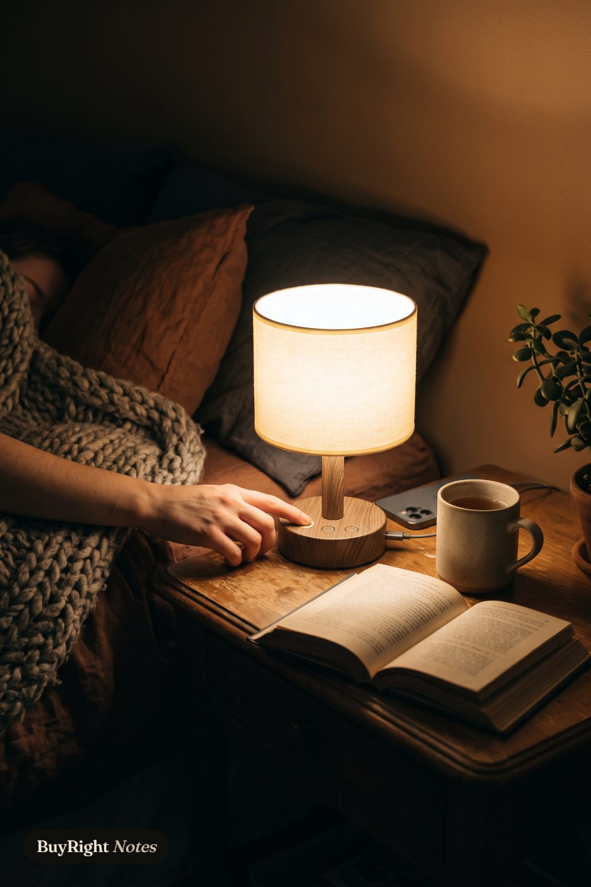

Reading
Fenmzee bedside lamp, dimmable touch with USB
"A small warm reading lamp for the nightstand: three brightness levels by touch, a bulb in the box, and USB-A, USB-C and an outlet on the base to charge the phone."
Why we picked it
We chose it for the reading nook or nightstand that needs one warm light and a place to charge.
- Touch base, three brightness levels, per the listing
- USB-A and USB-C ports plus an AC outlet on the base, per the listing
- LED bulb included; cream fabric shade, wood-grain and metal base
- Size
- about 14 in tall, 4.45 in across, per the listing
Skip it if you want a lamp that dims by app or voice, or a bright task light for a desk.
Before you buy
- Ports on the base: USB-A, USB-C and one AC outlet, per the listing; check what you plan to plug in.
- Light: a warm LED bulb comes in the box, three levels by touch; no app or voice control.
- Size: about 14 in tall and 4.45 in across, so it fits a narrow nightstand.
Fits: A nightstand or reading corner that needs one warm light and a charger in the same spot.
Not for: Anyone who wants app or voice control, or a bright desk lamp.
Goes with
- Kindle Paperwhite 16 GB: the reader it lights
- Kindle Paperwhite fabric cover (2024): the cover for the nightstand stack
- Hatch Restore 3 sunrise alarm clock: sound and a sunrise for the same bedside
Full guide: read it
As an Amazon Associate, BuyRight Notes earns from qualifying purchases. We pick products from published specs and our own notes, not paid placements.

Reading
 Kindle Paperwhite 16 GBReading without distractions: a glare-free screen that turns amber at night and a battery that lasts weeks.
Kindle Paperwhite 16 GBReading without distractions: a glare-free screen that turns amber at night and a battery that lasts weeks. Kindle Paperwhite fabric cover (2024)The official fabric cover for the 2024 Paperwhite and Colorsoft: wakes and sleeps the Kindle, folds back for one-handed reading.
Kindle Paperwhite fabric cover (2024)The official fabric cover for the 2024 Paperwhite and Colorsoft: wakes and sleeps the Kindle, folds back for one-handed reading.- Fenmzee bedside lamp, dimmable touch with USBA small warm reading lamp for the nightstand: three brightness levels by touch, a bulb in the box, and USB-A, USB-C and an outlet on the base to charge the phone.
From the same guide
- Kindle Paperwhite 16 GBReading without distractions: a glare-free screen that turns amber at night and a battery that lasts weeks.
- Kindle Paperwhite fabric cover (2024)The official fabric cover for the 2024 Paperwhite and Colorsoft: wakes and sleeps the Kindle, folds back for one-handed reading.
 Hatch Restore 3 sunrise alarm clockA bedside routine in one device: sound machine, reading light, dimmable clock and a sunrise alarm that wakes you gently.
Hatch Restore 3 sunrise alarm clockA bedside routine in one device: sound machine, reading light, dimmable clock and a sunrise alarm that wakes you gently.